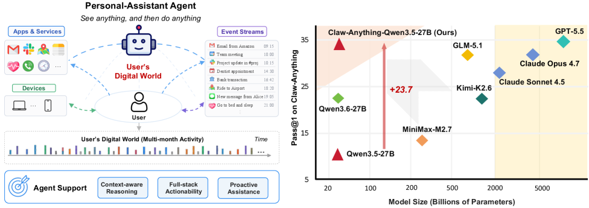
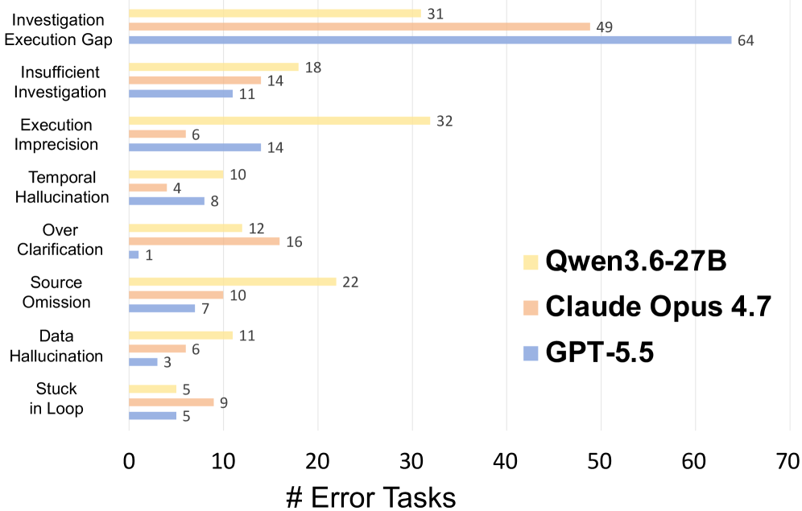
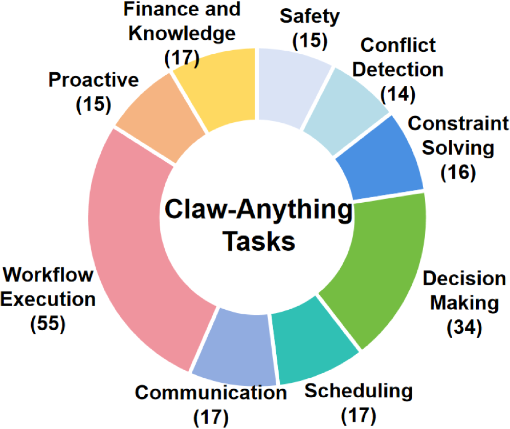
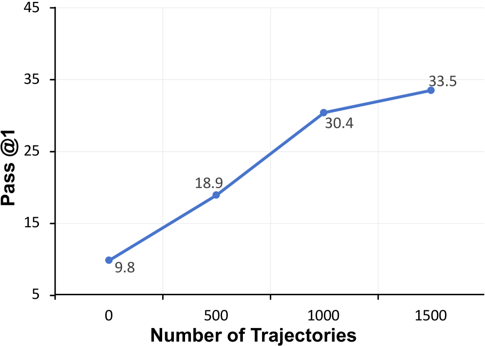

Claw-Anything introduces a benchmark that evaluates always-on personal assistants with broader access to the user's digital world, showing that even GPT-5.5 struggles (34.5% pass@1) due to the need for reasoning over long-horizon events, multiple services, and multi-device interactions.
本文提出了Claw-Anything基准，从长周期活动历史、多后端服务协同以及跨设备GUI+CLI交互三个维度扩展智能体上下文，揭示了当前最强模型（GPT-5.5）在始终在线个人助手任务上的巨大差距（pass@1仅34.5%）。同时，论文提供了一个自动化数据生成流水线，可产出200个人工验证任务和2000个训练环境，微调后的Qwen3.5-27B性能提升23.7%。
Deep Note — claw-anything
Key Takeaways - Claw-Anything expands agent context along three dimensions: long-horizon activity histories, interdependent backend services, and integrated GUI+CLI across devices. - GPT-5.5 achieves only 34.5% pass@1 on Claw-Anything, revealing a large gap between current agent capabilities and always-on personal assistance demands. - The benchmark includes 200 human-verified tasks and an automated pipeline generating 2,000 training environments, enabling scalable data generation. - Fine-tuning Qwen3.5-27B on pipeline-generated trajectories yields a 23.7% improvement, showing the pipeline's utility for training. - Claw-Anything evaluates proactive assistance, requiring agents to anticipate user needs from context rather than react to explicit requests.
0) Metadata
- Title: Claw-Anything: Benchmarking Always-On Personal Assistants with Broader Access to User's Digital World
- Alias: claw-anything
- Authors: Yusong Lin, Xinyuan Liang, Haiyang Wang, Qipeng Gu, Siqi Cheng, Jiangui Chen, Shuzhe Wu, Feiyang Pan, Lue Fan, Sanyuan Zhao, Dandan Tu
- arXiv ID: 2605.26086
- Published:
- Links:
- Abs: https://arxiv.org/abs/2605.26086
- HTML: https://arxiv.org/html/2605.26086v1
- PDF: https://arxiv.org/pdf/2605.26086
- Tags: always-on-assistant, agent-benchmark, context-scaling, proactive-assistance, data-generation-pipeline
- Domains: system_safety
- Rating: 5/5 (base 1 + quality 2 + observation 2)
1) Why-read
Claw-Anything introduces a benchmark that evaluates always-on personal assistants with broader access to the user's digital world, showing that even GPT-5.5 struggles (34.5% pass@1) due to the need for reasoning over long-horizon events, multiple services, and multi-device interactions.
2) CRGP
C — Context
Recent agent systems (e.g., OpenClaw series, Hermes Agent) are moving toward always-on personal assistance with long-term memory and background execution. Existing benchmarks like ClawBench, WildClawBench, and QwenClawBench provide only narrow, static slices of user state, limiting evaluation of context-sensitive reasoning and proactive assistance.
R — Related work
- ClawBench: broad coverage of standardized digital tasks but static and short-horizon.
- WildClawBench: realistic open environments but still narrow context.
- PinchBench: personal-productivity scenarios, limited scope.
- ClawMark: longer-horizon professional workflows, but no multi-device or cross-service integration.
- QwenClawBench: realistic CLI tasks, but no event streams or GUI.
- Claw-Eval: rubric-based evaluation for open-ended trajectories, but still localized tasks.
G — Gap
Existing benchmarks evaluate agents as solvers of localized, short-horizon tasks with clean settings, failing to capture the complexity of always-on personal assistance. They omit long-horizon activity histories, interdependent backend services, and multi-device interaction, and do not evaluate proactive assistance.
P — Proposal
Claw-Anything expands agent context along three dimensions: long-horizon event streams (months of activity), diverse backend services (avg. 10.1, max 18), and multi-device GUI+CLI interfaces. An automated pipeline simulates digital worlds via multi-round event injection, producing complex states with realistic noise, and generates 200 human-verified evaluation tasks plus 2,000 training environments.
---
4) Experiments
Main results
GPT-5.5 achieves 34.5% pass@1 on Claw-Anything, substantially lower than on prior benchmarks. Fine-tuning Qwen3.5-27B on 1,500 successful trajectories from the pipeline improves pass@1 by 23.7%.
Ablation
The automated data-generation pipeline yields 2,000 training environments; fine-tuning Qwen3.5-27B on successful trajectories from these environments improves the base model by 23.7%.
Limitations
['The benchmark relies on simulated user activity and synthetic tasks, which may not fully capture real-world user behavior and noise.', 'Evaluation is limited to 200 human-verified tasks, potentially missing edge cases in broader digital environments.', "The pipeline's LLM-based simulation may introduce biases or unrealistic event patterns."]
5) Why it matters
- Highlights the critical gap between current agent capabilities and the demands of always-on personal assistance, relevant for designing more context-aware systems.
- Provides a scalable data-generation pipeline that can be used to create training data for improving agent performance in complex digital environments.
- Introduces proactive assistance evaluation, a key capability for future personal assistants that anticipate user needs.
6) Next steps
- [ ] Evaluate your own agent models on Claw-Anything to identify weaknesses in long-horizon reasoning and cross-service coordination.
- [ ] Use the automated pipeline to generate additional training environments for fine-tuning your models on always-on assistance tasks.
- [ ] Investigate methods for improving agent robustness to noisy event streams and conflicting signals in multi-device settings.
- [ ] Explore proactive assistance mechanisms that leverage accumulated user context to anticipate needs without explicit requests.
7) Scoring
5/5 = base 1 + quality 2 + observation 2
Claw-Anything：以更广泛的数字世界访问权限评测始终在线的个人助手
主要结论 - Claw-Anything从三个维度扩展智能体上下文：长达数月的事件流、平均10.1个（最多18个）后端服务、以及跨设备的GUI+CLI集成。 - GPT-5.5在Claw-Anything上仅达到34.5%的pass@1，表明当前智能体能力与始终在线个人助手需求之间存在巨大鸿沟。 - 基准包含200个人工验证任务和可生成2000个训练环境的自动化流水线，支持可扩展的数据生成。 - 在流水线生成的轨迹上微调Qwen3.5-27B，性能提升23.7%，验证了流水线对训练的有效性。 - Claw-Anything评估主动辅助能力，要求智能体从上下文中预判用户需求，而非仅响应显式指令。
1) 阅读理由
Claw-Anything提出了一个评测始终在线个人助手的基准，发现即使GPT-5.5也仅能达到34.5%的pass@1，原因在于需要推理长周期事件、多服务协同以及跨设备交互。
2) CRGP（背景 / 相关工作 / 差距 / 方案）
背景：近期智能体系统（如OpenClaw系列、Hermes Agent）正朝着具备长期记忆和后台执行的始终在线个人助手发展。现有基准如ClawBench、WildClawBench和QwenClawBench仅提供狭窄、静态的用户状态切片，限制了上下文敏感推理和主动辅助的评估。 相关工作：ClawBench覆盖标准化数字任务但静态且短周期；WildClawBench提供真实开放环境但上下文仍狭窄；PinchBench聚焦个人生产力场景但范围有限；ClawMark涵盖较长周期的专业工作流但缺乏多设备或跨服务集成；QwenClawBench处理真实CLI任务但无事件流或GUI；Claw-Eval提供基于量规的开放式轨迹评估但仍局限于局部任务。 差距：现有基准将智能体视为在干净设定下解决局部短周期任务的求解器，未能捕捉始终在线个人助手的复杂性。它们忽略了长周期活动历史、相互依赖的后端服务以及多设备交互，也未评估主动辅助能力。 方案：Claw-Anything沿三个维度扩展智能体上下文：长周期事件流（数月活动）、多样化后端服务（平均10.1个，最多18个）以及多设备GUI+CLI接口。自动化流水线通过多轮事件注入模拟数字世界，生成带有真实噪声的复杂状态，并产出200个人工验证的评估任务和2000个训练环境。
3) 实验
主要结果：GPT-5.5在Claw-Anything上的pass@1为34.5%，显著低于此前基准。在流水线生成的1500条成功轨迹上微调Qwen3.5-27B，pass@1提升23.7%。
消融实验
自动化数据生成流水线产出2000个训练环境；在来自这些环境的成功轨迹上微调Qwen3.5-27B，基础模型性能提升23.7%。
局限性
基准依赖模拟用户活动和合成任务，可能无法完全捕捉真实用户行为和噪声；评估限于200个人工验证任务，可能遗漏更广泛数字环境中的边缘情况；流水线基于LLM的模拟可能引入偏差或不真实的事件模式。
4) 重要性
- 凸显了当前智能体能力与始终在线个人助手需求之间的关键差距，对设计更上下文感知的系统具有指导意义。
- 提供了可扩展的数据生成流水线，可用于创建训练数据以提升智能体在复杂数字环境中的表现。
- 引入了主动辅助评估，这是未来个人助手预判用户需求的关键能力。
5) 下一步
- [ ] 在Claw-Anything上评估你自己的智能体模型，以识别长周期推理和跨服务协调方面的弱点。
- [ ] 使用自动化流水线生成更多训练环境，用于微调模型以处理始终在线辅助任务。
- [ ] 研究提升智能体对噪声事件流和多设备场景中冲突信号鲁棒性的方法。
- [ ] 探索利用累积用户上下文预判需求、无需显式指令的主动辅助机制。

![Figure 3: Claw-Anything environment and automated data pipeline. Left: The environment comprises connected devices with system event streams and multiple services with persistent states and service-specific histories. Right: From a persona-grounded initial state, the pipeline iteratively samples task or noise templates and uses an LLM-based simulator to adapt events and update the world state. A final simulation generates the task query, reference solution, and grader; automatic filtering then yields task instances, with optional human verification for benchmark cases.](figures/1293/fig_003.png)


